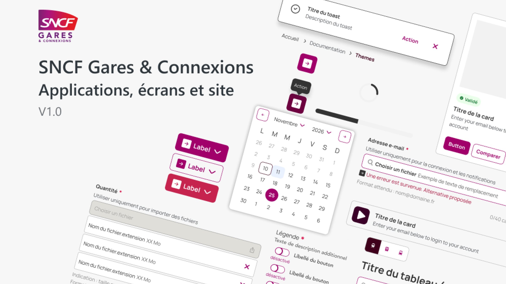
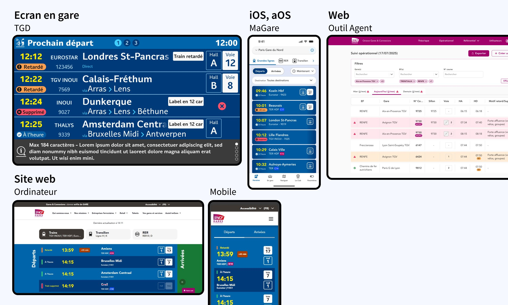

Piloter 16 projets avec 6 designers, grâce à un outil de pilotage que j'ai conçu, pour livrer les évolutions de 5 design systems.
Dette graphique
Transversalité
Multiplateforme
Client
SNCF Gares & Connexions
Rôle
Designer UX/UI
Période
Mai 2025 – sept. 2026
Équipe
6 designers
Outils
Figma, Claude, Figma Agent

En bref
Le problème, ma décision, l'effet.
Problème
Cinq design systems lacunaires, une seule documentation, un an d'écart entre les maquettes et la production.
Décision
Un socle commun, une gouvernance partagée et un pilotage des demandes selon la charge des designers.
Effet
La conception passe de 50 % à 10 % du temps, les tests de 0 % à 30 %.
Contexte & enjeu
Une même évolution, plusieurs produits à synchroniser.
Designer au sein du Studio Design, mon intervention était transverse : intervenir sur différents produits de Gares & Connexions. J'ai contribué à la structuration et à l'évolution des design systems destinés à plusieurs produits numériques de l'écosystème ferroviaire.
Côté SNCF, certains produits existants continuent de s'améliorer, tandis que d'autres connaissent une refonte technologique et graphique. La structuration des design systems a permis de rapprocher les pratiques de conception, de faciliter la réutilisation des éléments communs et d'installer une démarche de production plus itérative.
Périmètre — 3 familles de supports · 11 produits · Android · iOS · Web
Application voyageurs
MaGare
Écrans en gare
Information voyageurs
Live Socle — Grandes lignes
Live MaasTransit — Transports en commun
Live Multimodal — Transports alternatifs
Postes agents
7 outils métier
Outil A à Outil F
Portail applicatif
Les noms des outils internes ont été anonymisés.

Une évolution, plusieurs produits
Une même évolution se décline sur l'écran en gare, l'application MaGare, l'outil agent et le site web : elle impose une transversalité et une synchronisation entre les projets.
Constat — trois faits à mon arrivée
1 an
Une dette graphique
Un an d'écart entre les maquettes et la production.
> 50 %
Des design systems lacunaires
Les design systems existent, mais plus de la moitié des composants y sont absents.
1 / 5
Une maturité hétérogène
Une seule documentation pour cinq design systems, et une seule équipe alignée sur la notion de design system.
Problèmes identifiés
P1 · ORGANISATION
Aucun socle de fichiers commun d'un projet à l'autre, et une architecture pensée sans tenir compte de ceux qui la lisent.
P2 · ARCHITECTURE
Des éléments rangés sans logique partagée, difficiles à comprendre et à réutiliser pour les équipes.
P3 · QUALITÉ UX
Des solutions développées sans avoir été confrontées aux besoins réels des utilisateurs.
Démarche
Cinq enjeux, un système qui tient dans la durée.
Contribuer à structurer un design system multiplateforme et multiproduit, et piloter les demandes d'évolution selon la charge des designers.
Diagnostiquer
Identifier ce qui peut être partagé et réutilisé d'une fonctionnalité à l'autre.
Définir la stratégie
Structurer les évolutions selon les spécificités du Web, d'Android et d'iOS.
Organiser la contribution
Rendre les spécifications fonctionnelles compréhensibles par les équipes techniques.
Accompagner l'adoption
Faciliter la réutilisation des éléments communs et installer une production plus itérative.
Piloter l'adoption
Piloter la prise en main des nouveaux design systems auprès des parties prenantes.
design tokens : couleurs, mockups, langues et responsive
Décisions clés
Quatre décisions qui ont changé la façon de produire.
Chaque décision répond à un constat précis et se traduit par un effet observable.
D1
Une gouvernance commune et flexible
Constat
Aucun socle de fichiers commun, une seule documentation pour cinq systèmes.
Décision
Une organisation commune adaptée aux contraintes de chaque équipe, et une logique unique : fondations, atomes, blocs fonctionnels, modèles de page.
Effet
Plus itératifun cycle de production plus rapide et une réutilisation facilitée.
D2
Piloter selon la charge des designers
Constat
16 projets à livrer en parallèle sur 5 design systems, avec 6 designers.
Décision
Un tableau de pilotage conçu pour prioriser les demandes d'évolution selon la charge, et un partage hebdomadaire de l'avancement avec le management.
Effet
16 projetspilotés avec 6 designers, sur 5 design systems.
D3
Confronter les solutions aux utilisateurs avant le développement
Constat
Des solutions développées sans avoir été confrontées aux besoins réels.
Décision
Une stratégie de tests utilisateurs en amont, et une recherche diffusée dès la conception.
Effet
0 → 30 %du temps consacré aux tests.
D4
Fiabiliser le handoff, avec l'aide de l'IA
Constat
Un an d'écart entre les maquettes et la production.
Décision
Des templates de livraison, des fichiers Figma structurés par projet, une documentation de composants rédigée avec l'IA sous la supervision d'un designer, et un Storybook pour les équipes.
Effet
30 → 5 %du temps consacré à la livraison.
Le travail de fond derrière ces décisions
Gouvernance & évangélisation
Sensibilisation à l'accessibilité (RGAA, RAAM, audits), produit par produit
Process de livraison entre chefs de projet, designers et développeurs
Cérémonies dédiées aux échanges
Bibliothèques de composants
Analyse de la logique, des états et des variantes
Nomenclature de nommage
Revues avant chaque montée de version, grille de tests avant publication
Documentation & contribution
Support pour les testeurs et les chefs de projet
Processus de contribution entre designers, développeurs et chefs de projet
Tableau de pilotage de l'avancement des design systems
Réalisations
Avant, aujourd'hui.
Les mêmes écrans, avant et après la mise en place du design system.
La conception n'est plus le goulot d'étranglement.
Le temps libéré sur la conception et la livraison est réinvesti dans le cadrage, la recherche, les tests et la maintenance.
Avantancienne organisation
15 %50 %30 %
Aujourd'huinouvelle organisation
30 %15 %10 %30 %10 %
Cadrer
Rechercher
Concevoir
Tester
Livrer
Maintenir
Cadrer15 → 30 %
Rechercher5 → 15 %
Concevoir50 → 10 %
Tester0 → 30 %
Livrer30 → 5 %
Maintenir0 → 10 %
Les bénéfices identifiés
01Une production de livrables de conception plus rapide
02Un cycle de production plus itératif
03Une vision UX plus partagée entre les produits
04Une standardisation des pratiques de conception
05Une diffusion plus large de la démarche UX
Ces résultats traduisent l'intérêt d'un système de conception organisé : les ressources communes facilitent la réutilisation, tandis que les règles partagées contribuent à rendre les interfaces plus cohérentes.
Ce que j'ai appris
01
Structurer plusieurs design systems avec une architecture de tokens réaliste.
02
Améliorer les process de travail entre toutes les parties prenantes.
03
Diffuser la recherche utilisateur en amont de la conception.